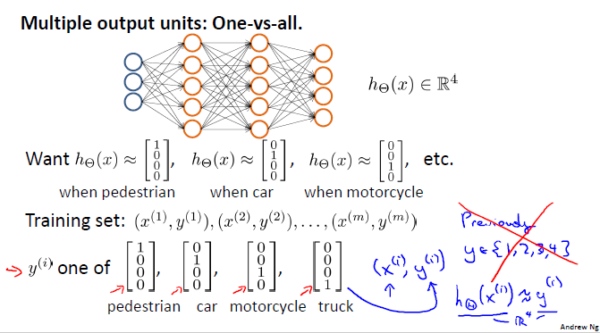

Neural Networks¶
Origins: Algorithms that try to mimic the brain
Was very widely used in 80s and early 90s; popularity diminished in late 90s
Recent resurgence: State-of-the-art technique for many applications
Neural Networks: Representation¶
Non-linear Hypotheses
Non-linear Classification
Computer Vision: Car detection

{kind=link}
Model Representation I¶
Neuron and the Brain¶

Neuron Model: Logistic Unit¶

- Let’s define:
\(a^{(j)}_{i}\) = “activation” of unit \(i\) in layer \(j\)
\(\Theta^{(j)}\) = matrix of weights controlling function mapping from layer \(j\) to layer \(j + 1\)

- Here:
Input layer \(1\) has \(3\) units: \(x_{1}, x_{2}, x_{3}\); \(\Theta^{(1)} \in \mathbb {R^{3*4}}\)
Hidden layer \(2\) has \(3\) units: \(a^{(2)}_{1}, a^{(2)}_{2}, a^{(2)}_{3}\); \(\Theta^{(2)} \in \mathbb {R^{4}}\)
Output layer \(3\) has \(1\) unit: \(a^{(3)}_{1} = y = h_{\Theta}(x)\)
- Add “bias unit”, \(x_{0} = 1\), compute for Hidden layer \(2\):
\(a^{(2)}_{1} = g(\Theta^{(1)}_{10} x_{0} + \Theta^{(1)}_{11} x_{1} + \Theta^{(1)}_{12} x_{2} + \Theta^{(1)}_{13} x_{3})\)
\(a^{(2)}_{2} = g(\Theta^{(1)}_{20} x_{0} + \Theta^{(1)}_{21} x_{1} + \Theta^{(1)}_{22} x_{2} + \Theta^{(1)}_{23} x_{3})\)
\(a^{(2)}_{3} = g(\Theta^{(1)}_{30} x_{0} + \Theta^{(1)}_{31} x_{1} + \Theta^{(1)}_{32} x_{2} + \Theta^{(1)}_{33} x_{3})\)
- Add “bias unit”, \(a^{(2)}_{0} = 1\), compute for Output layer \(3\):
\(h_{\Theta}(x) = a^{(3)}_{1} = g(\Theta^{(2)}_{10} a^{(2)}_{0} + \Theta^{(2)}_{11} a^{(2)}_{1} + \Theta^{(2)}_{12} a^{(2)}_{2} + \Theta^{(2)}_{13} a^{(2)}_{3})\)
If network has \(s_{j}\) units in layer \(j\), \(s_{j+1}\) units in layer \(j+1\), then \(\Theta^{(j)}\) will be of dimension \(s_{j+1}*(s_{j}+1)\). \(\Theta^{(j)} \in \mathbb {R^{s_{j+1}*(s_{j}+1)}}\)
Model Representation II¶
Forward Propagation: Vectorized Implementation¶
\(a^{(1)} = x = {\begin{bmatrix}x_{0}\\x_{1}\\x_{2}\\x_{3}\end{bmatrix}}\)
\(z^{(2)} = {\begin{bmatrix}z^{(2)}_{1}\\z^{(2)}_{2}\\z^{(2)}_{3}\end{bmatrix}} = \Theta^{(1)} a^{(1)}\)
\(a^{(2)} = g(z^{(2)}) \in \mathbb {R^{3}}\), add \(a^{(2)}_{0} = 1\), \(a^{(2)} \in \mathbb {R^{4}}\)
\(z^{(3)} = \Theta^{(2)} a^{(2)}\)
\(h_{\Theta}(x) = a^{(3)}_{1} = g(z^{(3)})\)
Neural Network learning its own features
Other network architectures can have many hidden layers between the input layer and the output layer

Multi-class Classification¶
Multiple output units: One-vs-all
Neural Network (Classification)¶
Training set, \(m\) examples: \({ (x^{(1)}, y^{(1)}), (x^{(2)}, y^{(2)}), ..., (x^{(m)}, y^{(m)}) }\)
\(L\) = total no. of layers in network
\(s_{l}\) = no. of units (not counting bias unit) in layer \(l\)
- Binary Classification:
\(y^{(i)} = 0\) or \(1 \in \mathbb {R}\)
\(1\) output unit
- Multi-class Classification (K classes):
\(y^{(i)} \in \mathbb {R^{K}}\) E.g. \({\begin{bmatrix}1\\0\\0\\0\end{bmatrix}}\), \({\begin{bmatrix}0\\1\\0\\0\end{bmatrix}}\), \({\begin{bmatrix}0\\0\\1\\0\end{bmatrix}}\), \({\begin{bmatrix}0\\0\\0\\1\end{bmatrix}}\)
Representing pedestrian, car, motorcycle, and truck respectively
\(K\) output units
Cost Function¶
Logistic Regression:
\(J(\theta) = - \frac{1}{m} [ \sum_{i=1}^{m} y^{(i)} \log h_\theta (x^{(i)}) + (1 - y^{(i)}) \log(1 - h_\theta (x^{(i)})) ] + \frac{\lambda}{2m} \sum_{j=1}^{n} \theta_{j}^2\)
Exclude \(\theta_{0}\) for regularization
- Neural Network:
\(h_\Theta (x) \in \mathbb {R^{K}}\) and \((h_\Theta (x))_{k} = k^{th}\) output
\(J(\Theta) = - \frac{1}{m} [ \sum_{i=1}^{m} \sum_{k=1}^{K} y^{(i)}_{k} \log(h_\Theta (x^{(i)}))_{k} + (1 - y^{(i)}_{k}) \log(1 - (h_\Theta (x^{(i)}))_{k}) ] + \frac{\lambda}{2m} \sum_{l=1}^{L-1} \sum_{i=1}^{s_{l}} \sum_{j=1}^{s_{l+1}} (\Theta_{ji}^{(l)})^2\)
Backpropagation Algorithm¶
- Gradient Computation
Cost function \(J(\Theta)\)
\(\min_{\Theta} J(\Theta)\)
- Need code to compute:
\(J(\Theta)\)
\(\frac{\partial }{\partial \Theta_{ji}^{(l)}} J(\Theta)\), \(\Theta_{ji}^{(l)} \in \mathbb {R}\)
Given one training example (\(x, y\)):
- Forward propagation:
\(a^{(1)} = x\)
\(z^{(2)} = \Theta^{(1)} a^{(1)}\)
\(a^{(2)} = g(z^{(2)})\), (add \(a_{0}^{(2)} = 1\))
\(z^{(3)} = \Theta^{(2)} a^{(2)}\)
\(a^{(3)} = g(z^{(3)})\), (add \(a_{0}^{(3)} = 1\))
\(z^{(4)} = \Theta^{(3)} a^{(3)}\)
\(a^{(4)} = h_\Theta (x) = g(z^{(4)})\)
Gradient computation: Backpropagation algorithm:
Intuition: \(\delta_{j}^{(l)}\) = “error” of node \(j\) in layer \(l\)
- For each output unit (layer \(L = 4\))
\(\delta_{j}^{(4)} = a_{j}^{(4)} - y_{j}\)
- Or
\(\delta^{(4)} = a^{(4)} - y\)
\(\delta^{(3)} = (\Theta^{(3)})^{T} \delta^{(4)} .* g'(z^{(3)})\)
\(\delta^{(2)} = (\Theta^{(2)})^{T} \delta^{(3)} .* g'(z^{(2)})\)
No \(\delta^{(1)}\)
\(\frac{\partial }{\partial \Theta_{ji}^{(l)}} J(\Theta) = a_{j}^{(l)} \delta_{i}^{(l+1)}\) (ignore \(\lambda\); i.e. \(\lambda = 0\))
TODO: week 5
Gradient Descent¶
Also called Batch Gradient Descent for it’s processing all training examples in one batch at every iteration.
\(\theta_{j} = \theta_{j} - \alpha \frac{\partial }{\partial \theta_{j}} J(\Theta)\)
Repeat for each iteration {
\(\theta_{j} = \theta_{j} - \alpha \frac{1}{m} \sum_{i=1}^{m} (h_\theta (x^{(i)}) - y^{(i)}) x^{(i)}_{j}\)
Here \(x^{(i)}_{0} = 1\), \(j = 0, ..., n\)
}
\(\alpha\) = Learning Rate.
Normal Equation¶
Method to solve for \(\Theta\) analytically.